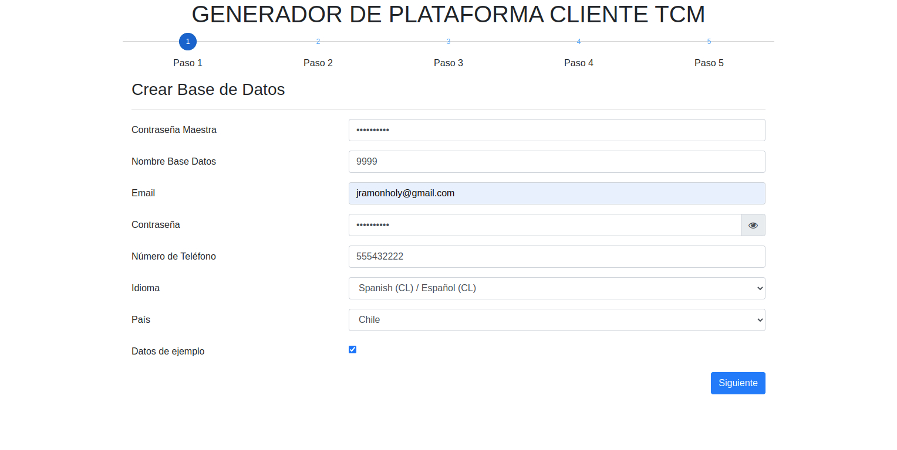
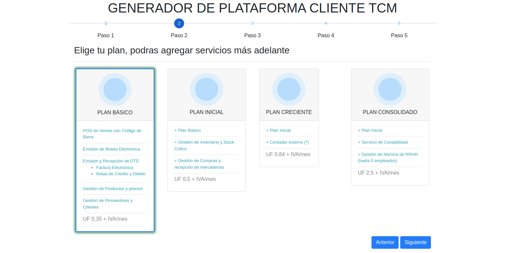

Configuracion
Modulo: TCM Build Client
Descripcion
Este modulo es el encargado de crear una base de datos de Odoo y construuir una instancia cliente de TCM basado en un plan seleccionado por el cliente, servicios adicionales y medios de pago.
Instalacion del modulo
Para la instalacion del modulo se debe iniciar como usuario administrador desde el portal pricipal TCM y luego acceder a la vistas de aplicaciones y en la barra de filtros escribir el texto TCM y seguidamente seleccionar el modulo con el nombre TCM Build Client y luego hacer click en instalar.
Como usar este modulo
Lo primero es acceder desde el portal principal logueado como administrador es hacer click en la opcion que dice CREAR NUEVO CLIENTE como la imagen que se muestra debajo. Seguidamete se abrira en una nueva pestana de nuestro navegador un asistente que constara con
5 pasos para su correcto funcionamiento.
Seguidamete se abrira en una nueva pestana de nuestro navegador un asistente que constara con
5 pasos para su correcto funcionamiento.
- Paso 1: Crear Base de Datos  En esta seccion se procede a introducir los datos para la creacion de una nueva instancia del cliente TCM. Solamente rellenar los campos con los valores correctos y de ahí ir al siguiente paso.
- Paso 2: Elegir un Plan  Se trata de elegir un plan de servicios asociados con tarifas a cobrar por cada tipo de plan. Se selecciona el plan deseado y de ahí ir al siguiente paso.
-
Paso 3: Servicios Adicionales
 Aqui se escogen los servicios adicionales al plan seleccionados en el paso anterior.
Para seleccionar un servicio adicionar, haremos click en el servicio y llenamos los campos con los
datos adecuados y luego en el botón aceptar para calcular el costo estimado
y de ahí ir al siguiente paso.
Aqui se escogen los servicios adicionales al plan seleccionados en el paso anterior.
Para seleccionar un servicio adicionar, haremos click en el servicio y llenamos los campos con los
datos adecuados y luego en el botón aceptar para calcular el costo estimado
y de ahí ir al siguiente paso.
-
Paso 4: Medio de Pago
 Aqui se selecciona el medio de pago para efectuar la transferencia en la plataforma de su preferencia.
Seguidamente hacemos click en siguiente para ir al siguiente paso.
Aqui se selecciona el medio de pago para efectuar la transferencia en la plataforma de su preferencia.
Seguidamente hacemos click en siguiente para ir al siguiente paso.
-
Paso 5: Resumen
 Este es el ultimo paso. Una vez ejecutado y verificados los datos de los 4 pasos anteriores damos click
el el boton Terminar para crear la instancia con su base de datos e instalar los modulos
necesarios para acceder a la instancia del cliente.
Este es el ultimo paso. Una vez ejecutado y verificados los datos de los 4 pasos anteriores damos click
el el boton Terminar para crear la instancia con su base de datos e instalar los modulos
necesarios para acceder a la instancia del cliente.